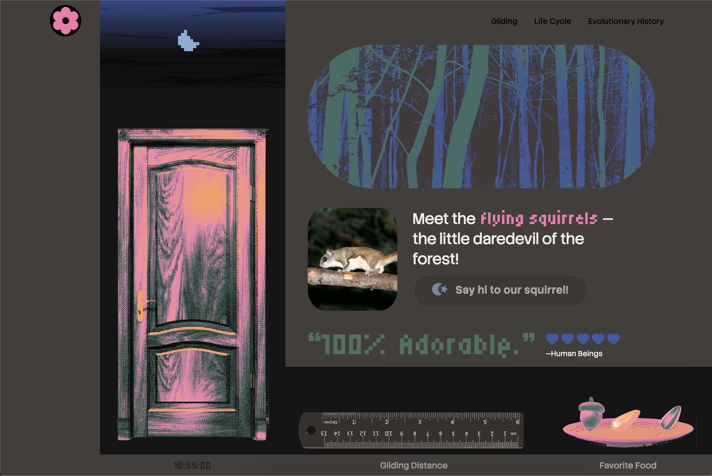
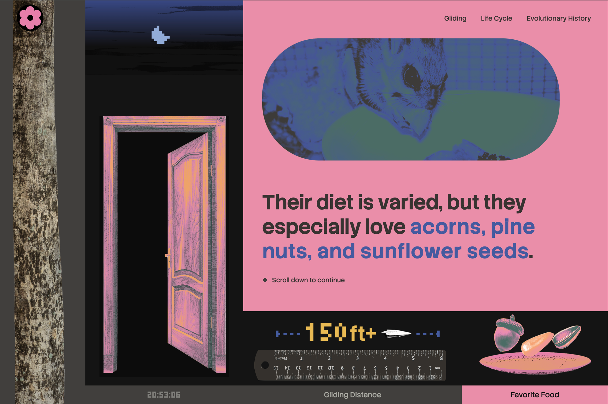
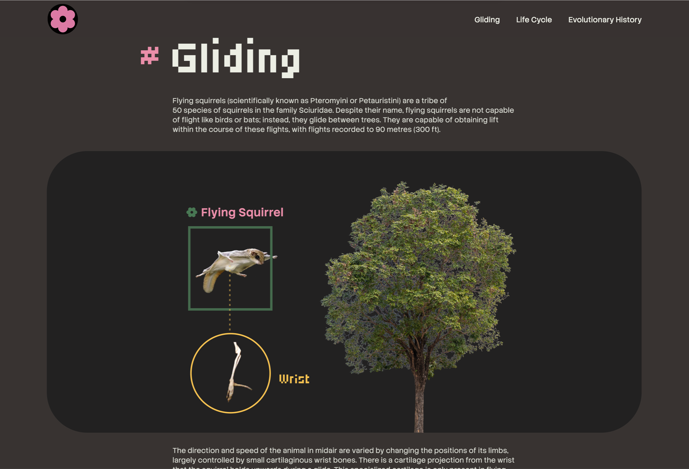
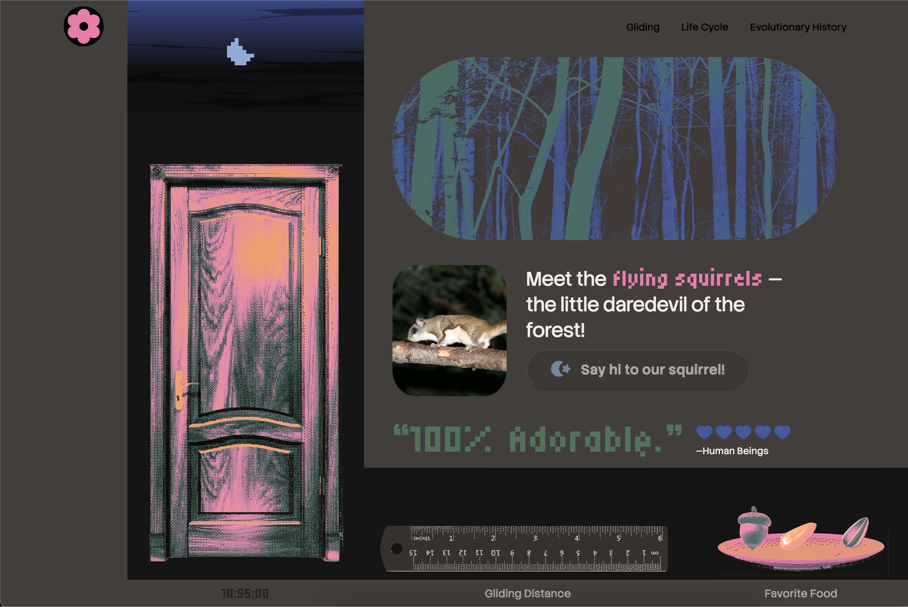
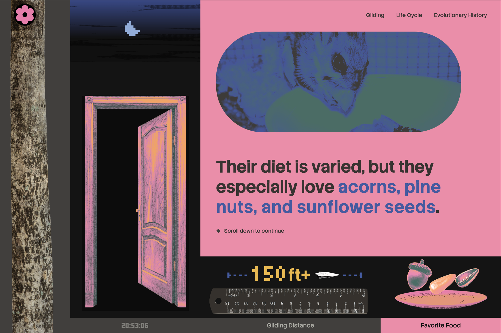
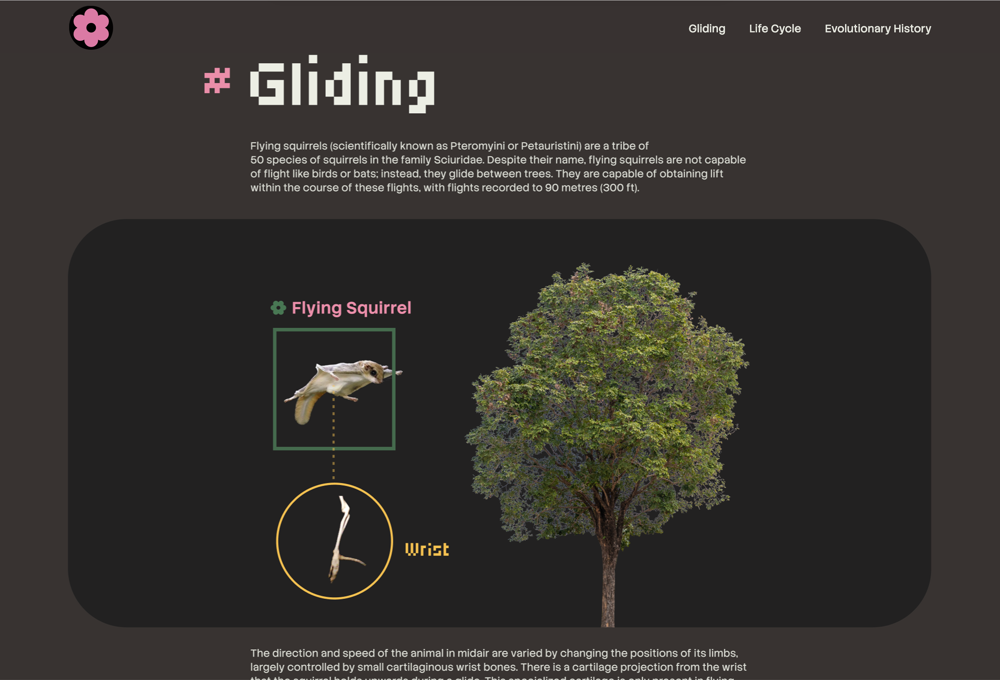

Microsite: Flying Squirrels Wiki
UI / UX, Front-end
This is a wiki-style microsite featuring flying squirrels through a playful and engaging lens. It combines quick facts with animated visuals and motion graphics. Designed as an interactive web experience, the site uses scroll-triggered animations built with GSAP to introduce information in staggered sequences, adding dynamic motion to concise educational content. In doing so, the project transforms a factual reference into an immersive and approachable learning experience.
The full website is accessible here.
-
Duration
October - December 2025
-
Language
Vanilla web (HTML/CSS/JavaScript)
Website walkthrough
 




